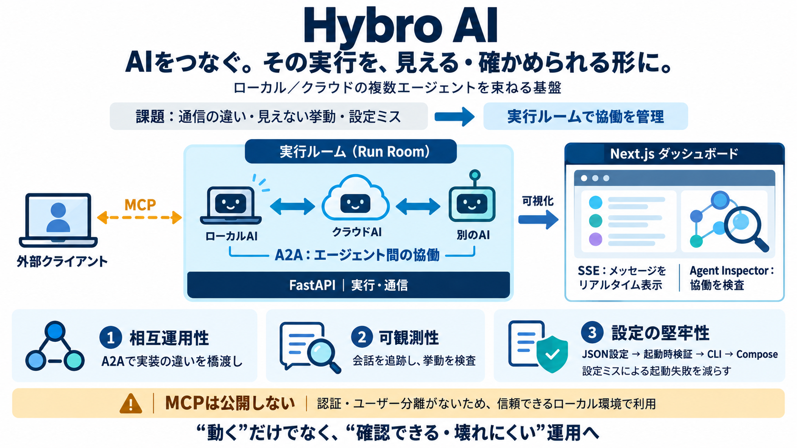

A2A Protocol: The Definitive Agent-to-Agent Guide
This technical guide details the Agent2Agent (A2A) protocol specification. A2A reached v1.0 in 2026 and is governed unde…

This technical guide details the Agent2Agent (A2A) protocol specification. A2A reached v1.0 in 2026 and is governed unde…
IBM Think The Agent2Agent (A2A) protocol is a communication protocol for artificial intelligence (AI) agents, initially…
Google unveiled its Agent2Agent (A2A) protocol at Cloud Next 2025 in an effort to standardise communication between dive…
## What this means for teams building agents today The roadmap is not a release schedule. It is a set of priority signa…
All posts May 23, 2026 # AI Agent Interoperability: What MCP and A2A Mean for Enterprise Governance Cristina Peterson…